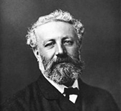

The one hundred and first meridian was passed.
Mr. Fogg and his partners had resumed their game; no one—not even the dummy—complained of the length of the trip. Fix had begun by winning several guineas, which he seemed likely to lose; but he showed himself a not less eager whist-player than Mr. Fogg. During the morning, chance distinctly favoured that gentleman. Trumps and honours were showered upon his hands.
Once, having resolved on a bold stroke, he was on the point of playing a spade, when a voice behind him said, "I should play a diamond."
Mr. Fogg, Aouda, and Fix raised their heads, and beheld Colonel Proctor.
Stamp Proctor and Phileas Fogg recognised each other at once.
"Ah! it's you, is it, Englishman?" cried the colonel; "it's you who are going to play a spade!"
"And who plays it," replied Phileas Fogg coolly, throwing down the ten of spades.
"Well, it pleases me to have it diamonds," replied Colonel Proctor, in an insolent tone.
He made a movement as if to seize the card which had just been played, adding, "You don't understand anything about whist."
Short Bio |
 |
|---|---|
| Born | Jules Gabriel Verne 8 February 1828 Nantes, France |
| Died | 24 March 1905 (age 77) Amiens, France |
| Occupation | Novelist, poet |
| Nationality | French |
| Period | 1850-1905 |
| Notable Works | Twenty Thousand Leagues Under the Sea |
| Journey to the Center of the Earth | |
| From the Earth to the Moon | |
| Around the World in Eighty Days | |
| - view additional titles |